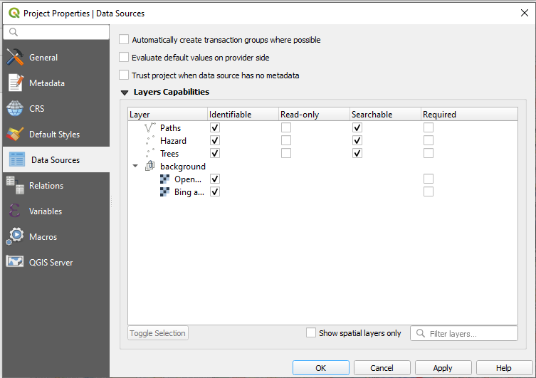

In Input app, in addition to viewing map data, you can view and search attribute forms related to your data or non-spatial tables within your project.
QGIS project configuration
To be able to view the attribute table of a layer, you need to first configure your QGIS project:
- Open QGIS Desktop with you QGIS Project
- In the Menu > Project > Properties click on “Data Sources” 
- Under Identifiable column, select the layers you’d like to browse the attribute forms.
Input app, only displays a summary of the table for all the data. By default, it shows the first column as the header for summary of the field. To change that, you can set the Display Name

Browse data forms in Input
You can now open the attribute table in Input, by:
- Open a project in Input
- From the lower menu, select (More) > Browse feature
- Select the layer/table from the list
The attribute table should appear:
Search features
While browsing data in the attribute table, you can use search to quickly find features.
The search:
- looks up for a match in all searchable attributes values.
- is not case sensitive
In Layer properties (left click on layer on the Layers panel -> Properties -> “Fields”), you can define which attributes (fields) are searchable and which are not. By default, all attributes are searchable.
If a field is marked in a field configuration as Not searchable, the search will omit field values in the compare function. So if you search for specific existing value of such field, you should expect no results.